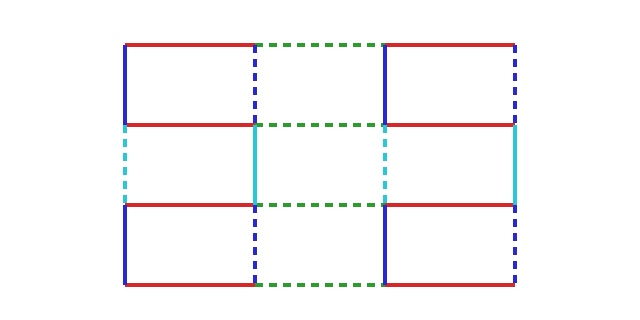
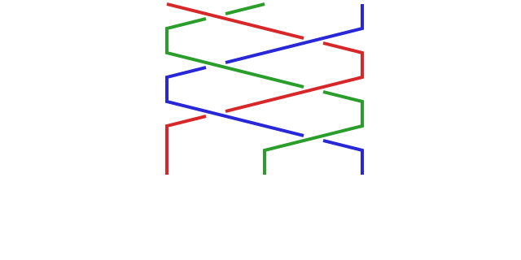
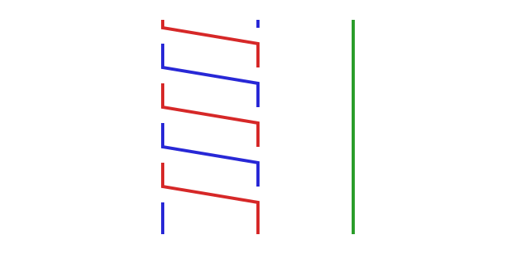

Every shape here is a program that is its own picture — generated from a text cartridge, byte-locked, and rendered so that each mark carries meaning (color = generator, dash = a minus sign, stagger = a tick). No pixel is decoration. This corridor gathers the catalog, the factory's live surfaces, and the design language into one dark hall — added alongside what already stands, nothing torn down.



Autonomous software factory operations, BFT agent-array metrics, alignment substrate tracking.
operationsThe settlement console — the amber-and-teal control surface.
consoleThe fleet and equipment ledger.
ledgerThe append-only observe ledger — CI writes a frame every 15 minutes; this reads it live.
live · ledgerAddison's shelter cutaway — the settlement in cross-section, rooms and dwellers.
design · addison cooperA live seeded room run — the controller, the tick loop, the heat board, and the coordination lanes, rendered by the substrate itself. Zero JS, replayable from seed S4.
live · darkhall-room.tsAll 23 cartridges — every program that is its own picture, generated not drawn.
23 shapesWhat the August 2026 result proved about the zeros of the zeta function, drawn rather than written — three regions, one of which has always been empty. Assumes no background. Zeta verified none of it; the page says so.
explainer · not our resultWhat goes on in each dweller's mind — live future predictions, quality-per-glyph, the whole society over Reticulum.
centerpiece